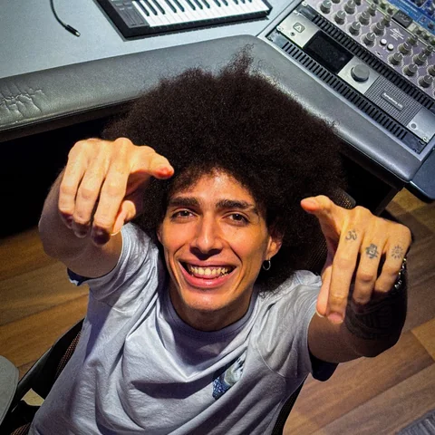
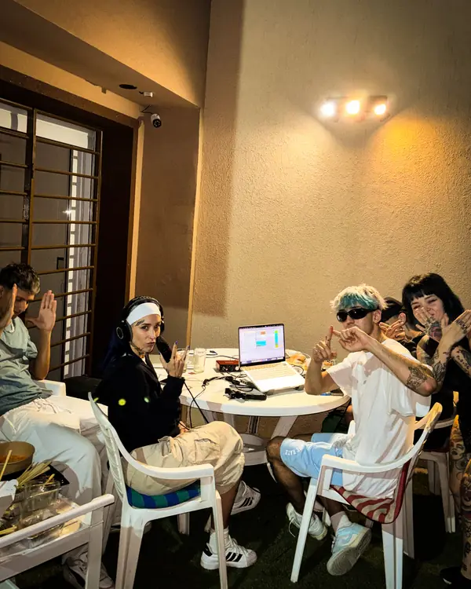
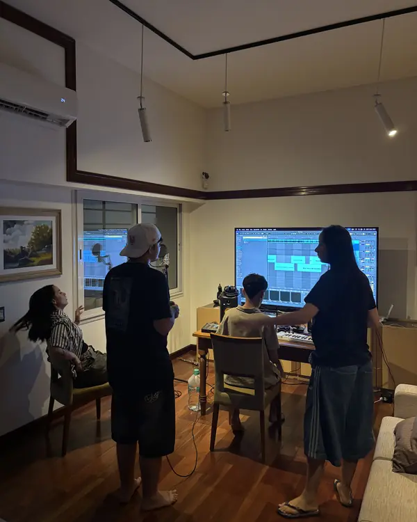
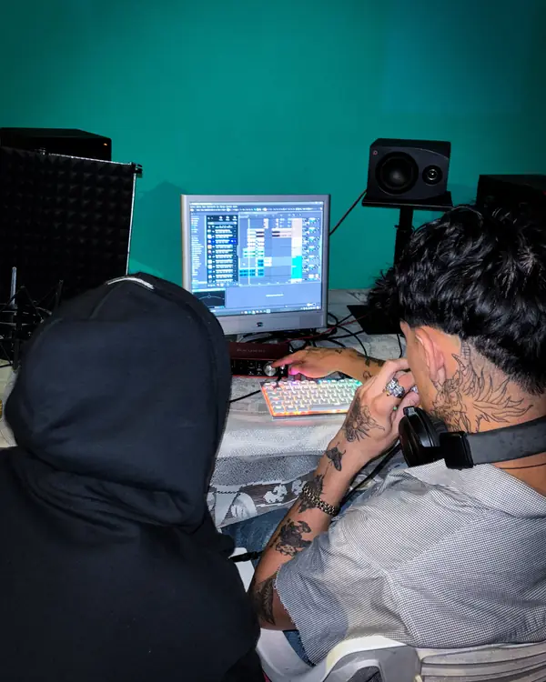
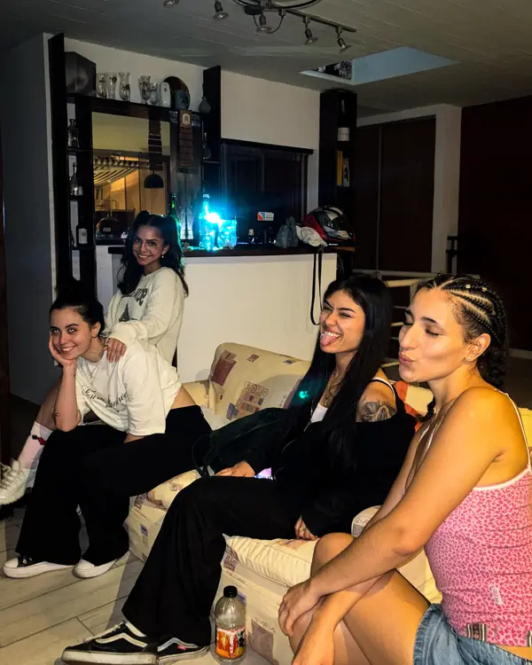

Foto próximamente
01
Semana 1
La charla y el beat
Escuchamos tus referencias, hablamos de lo que querés contar y arrancamos la base.

Sello Discográfico independiente y productora. Desarrollo artístico integral, composición, grabación, producción, mezcla, mastering, distribución, portada y video, sesión a sesión, con Yaco Santana.
ZECHE GRUV empezó en mi cuarto. Para hacer lugar parábamos el colchón contra la pared, lo decorábamos un poco y, de paso, nos servía de aislante. No era el estudio más profesional del mundo, pero grabábamos igual, con lo que teníamos y muchas ganas. Hoy somos un sello independiente con créditos en más de 35 canciones publicadas, y ya pasaron más de 200 artistas por el estudio.

Nací en Brasil y crecí viajando por Latinoamérica entre tambores y las canciones que me cantaba mi mamá. Me formé en el conservatorio y en la Escuela de Música de Buenos Aires, hice un curso de producción y aprendí a grabar de manera autodidacta. Trabajé de lo que fuera, hasta que un día dejé el trabajo que me hacía infeliz y le aposté todo a la música, que es lo que de verdad me mueve. Hoy vivo de eso.
Estudié y escuché mucha música: del clásico al folclore, del trap al metal. Por eso me encantan las mezclas raras; si tenés una en la cabeza, la podemos hacer. Estoy en cada sesión, de la primera idea al lanzamiento.
Una vez por semana, dos horas, un tema por mes. Sin apuro, con dirección.
Escuchamos tus referencias, hablamos de lo que querés contar y arrancamos la base.
Trabajamos juntos las ideas. Si ya las tenés, las pulimos.
Te acompaño en cada toma: sacar más la voz, ponerle aire, encontrar el flow.
Arreglos, detalles y la canción lista para mezcla y mastering.
Después viene la distribución y, si querés, el video. Y seguimos: ideas de contenido, live sessions, open mics y recomendaciones para shows.
Vení a conocer el estudio ↗Reseñas reales de Google. Pronto, las historias completas.
Si querés encontrar tu sonido, es por acá!
Alto espacio, hermoso ambiente de laburo y laboratorio de arte, una masa los pibes 🙌
Yaco es lo más y el estudio es perfecto para hacer lo que quieras con tu música 🎵
Altísimo estudio, la rompen toda literal.
Increíble el espacio! Mucha buena onda y talento.
Muy profesionales, excelentes equipos!! Recomiendo mucho para grabar tus primeras canciones!
Cargando desde Spotify…
Nos vamos unos días a crear juntos: varios estudios, artistas de todos lados y música a toda hora. Estamos armando la próxima fecha; muy pronto vas a poder anotarte acá.




El open mic es nuestra forma de escuchar nuevos talentos. Es el espacio que desde ZECHE GRUV les damos a los artistas que trabajan con nosotros para que se expresen, y una puerta abierta para los que todavía no nos conocen: vení, conectate y mostrá lo que hacés. Si cantás en el open mic, podés ser parte del próximo show. Fechas pronto acá.
Trabajamos por proyecto porque las canciones necesitan tiempo. Cuantas más canciones hagamos juntos, menos te sale cada una.
¿Ya sabés qué necesitás? Elegí los servicios que quieras combinar de la lista y te armamos una cotización a medida, directo por WhatsApp.
Tu canción de punta a punta, en cuatro sesiones: la creamos, la grabamos, la mezclamos, la masterizamos y la subimos a todas las plataformas.
Para quienes quieren construir algo más grande. Elegí EP o álbum, contanos cuántos temas y armamos el camino juntos.
¿Tenés algo para decir y no sabés cómo querés que suene? Escribinos. La primera visita al estudio es para conocernos.